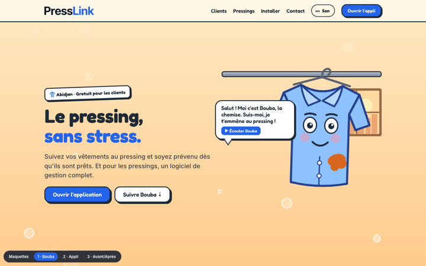
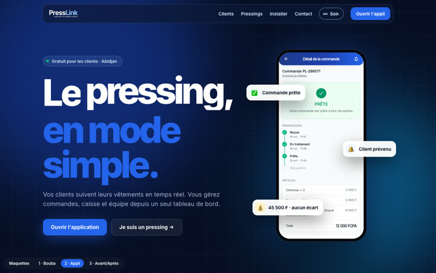
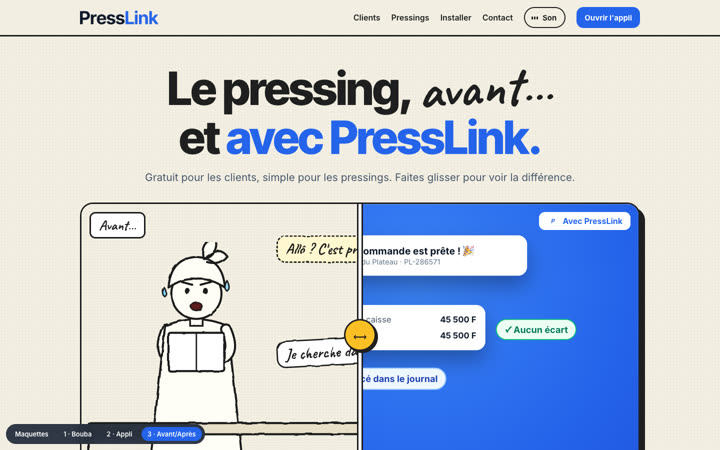

Site vitrine en motion design : 3 orientations
Trois maquettes du site, avec animations au défilement, interactions, musique, voix off et bruitages. Le contenu est le même (clients, pressings, vidéos, installation, contact) ; seule la façon de le raconter change.

1 · Le voyage de BoubaUne chemise bavarde vous guide. Le parcours défile à l'horizontale, ses yeux suivent la souris, elle réagit au clic.Ouvrir →

2 · L'appli prend viePrésentation produit sombre et rythmée : téléphone en 3D, sections épinglées, caisse qui se remplit au défilement.Ouvrir →

3 · Avant / AprèsLe sketch : chaque situation se compare en faisant glisser la poignée, du croquis de la galère à la solution PressLink.Ouvrir →
🔊 Sur chaque maquette, appuyez sur Son en haut à droite pour la musique, la voix off et les bruitages. Essayez aussi sur téléphone.